It makes no sense to talk about veteran service in wars if we have no idea what the wars were about, where they were, or when. Remembrance Day is not a celebration of military glory: it is a sober recognition of real human sacrifice. Today we walk through Canada's conflicts so you understand the world veterans stepped into, and you will use your new printed Field Guide to solve historical scenarios.
Your Assignment Pathways 300 Words • Google Docs
Option A (Family Story): Interview family about someone who lived through war, wartime life, displacement, or home front work.
Option B (Archival Search): Research a Maritime soldier on canadianletters.ca or veterans.gc.ca using the Room 8 curated starter list.
The Core Standard: Exactly 300 words answering who they were, where they served, why Canada was there, and the human reality of their experience.
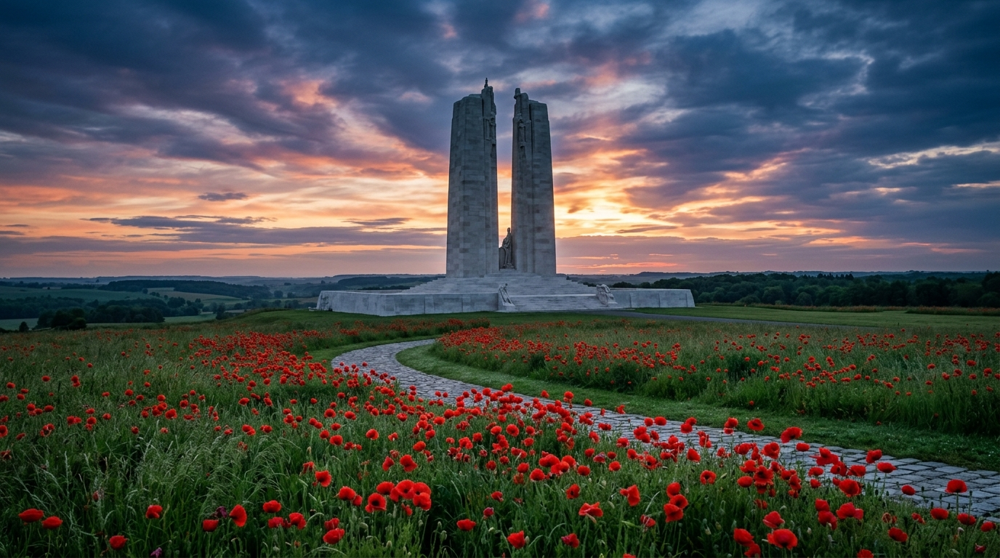
Rival European empires spent decades building giant armies and secret alliances like a line of dominoes. When a Serbian nationalist assassinated the Austrian Archduke in 1914, the dominoes fell and dragged dozens of countries into four years of slaughter in the mud of the Western Front. Because Canada was a British colony with no separate foreign policy, when Britain declared war, all Canadians were automatically at war too.
Battlefield Reality & Local Cost Western Front
Total Casualties: ~20 million deaths (~9.7 million military, ~10 million civilian) plus 21 million wounded across all combatants.
Canadian Cost: ~620,000 served, ~66,000 killed, 172,000 wounded (from a Canadian population of only 8 million).
Where: Trench warfare across Belgium and northern France (Ypres, the Somme, Passchendaele, Vimy Ridge).
Who we fought: The German Empire and the Austro-Hungarian Empire.
How it ended: Allied forces broke the German line in 1918, ending with the Armistice on November 11 at 11:00 AM.
Local effects: Primary departure port for troops and supplies. On Dec 6, 1917, the munitions ship Mont-Blanc exploded, killing almost 2,000 civilians.
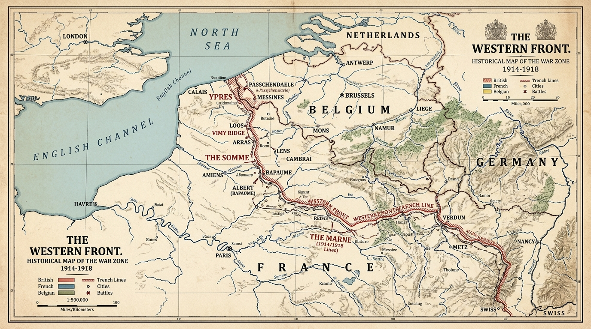
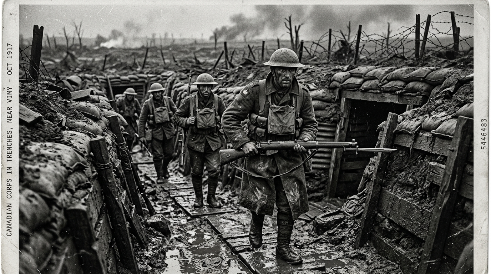
WWII was a two-front struggle against the Axis Powers (Nazi Germany, Fascist Italy, and Imperial Japan). In Europe, Adolf Hitler exploited German bitterness over the 1919 Versailles Treaty to seize power, invading neighbours and murdering six million Jewish people in the Holocaust. In the Pacific, Imperial Japan sought an Asian empire for oil and rubber, brutally invading China in 1937. When the Allies cut off trade to halt conquest, Japan launched surprise attacks across the Pacific on Dec 7, 1941 (Pearl Harbor and Hong Kong). Canada voted independently to declare war on Germany in 1939 and immediately on Japan on Dec 7, 1941.
Two Theatres & The Convoy Lifeline Atlantic, Europe, Pacific
Total Casualties: 75 to 80 million deaths globally (over 50M civilians, including 6M Jews in the Holocaust and millions across Asia).
Canadian Cost: Over 1.1 million served (over 10% of total population), ~45,000 killed, 55,000 wounded.
Battle of the Atlantic: Halifax was the Convoy Capital. Merchant ships assembled in Bedford Basin into massive convoys under constant German U-boat threat in the mid-Atlantic air gap.
Pacific & Hong Kong (1941): Nearly 2,000 Canadians defended Hong Kong. All were killed or captured (290 killed in battle); over 1,680 endured brutal Japanese POW slave labour camps, where 267 died.
Home Front Internment: In 1942, wartime racism led Canada to forcibly intern over 22,000 Japanese Canadians in BC interior camps, selling off their homes, farms, and businesses.
Atomic Defeat & The United Nations: Germany surrendered in May 1945. Japan surrendered in August 1945 after atomic bombs hit Hiroshima and Nagasaki (built with Canadian uranium from Great Bear Lake). The UN was founded in October 1945 to avert nuclear extinction.
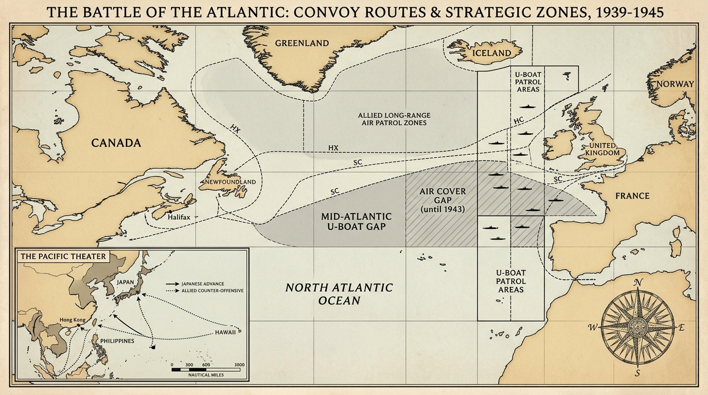
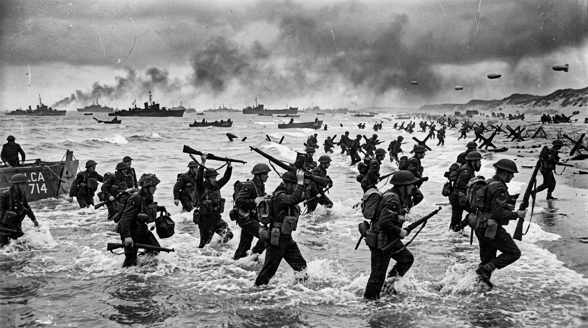
During the Cold War, the world was split between the Communist bloc (Soviet Union and China) and Western democracies (US, Canada, and allies). Korea had been divided into a Communist North and a pro-Western South. In June 1950, the Communist North launched a surprise invasion that almost pushed the South into the sea. The United Nations sent an international force to stop the takeover. After three brutal years in freezing mountain trenches, the war ended with the border right near where it started.
Combat & The 38th Parallel Stalemate Hill 677
Total Casualties: ~3 million deaths. Over half were Korean civilians (estimated 1.5 to 2 million civilians killed), plus 1 million military casualties.
Canadian Cost: 26,791 served, 516 killed, ~1,200 wounded.
Where: Mountainous Korean peninsula, sub-zero winter combat, Hill 677 at Kapyong.
Who we fought: North Korean communist forces and Chinese army divisions.
Armistice: Ceasefire signed July 27, 1953. No peace treaty was ever signed. The border (DMZ) remains one of the most heavily armed minefields on Earth.
The Forgotten War: Fought in the shadow of WWII, but 516 Canadians gave their lives.
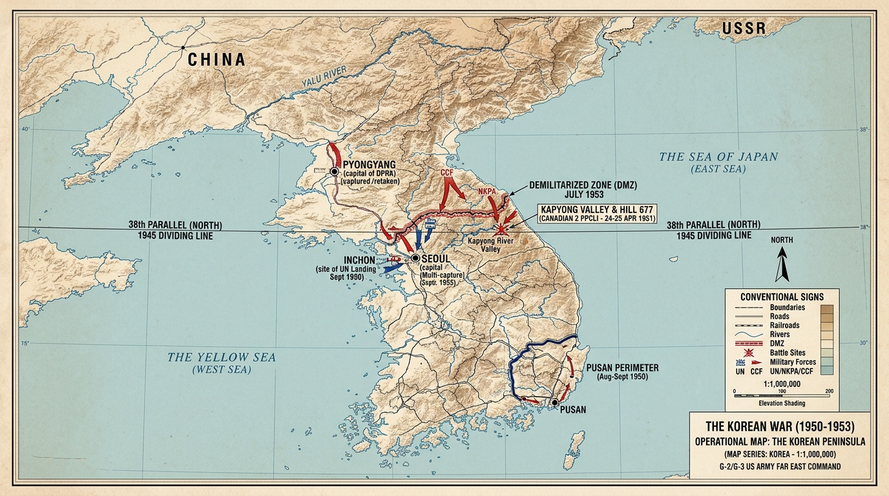
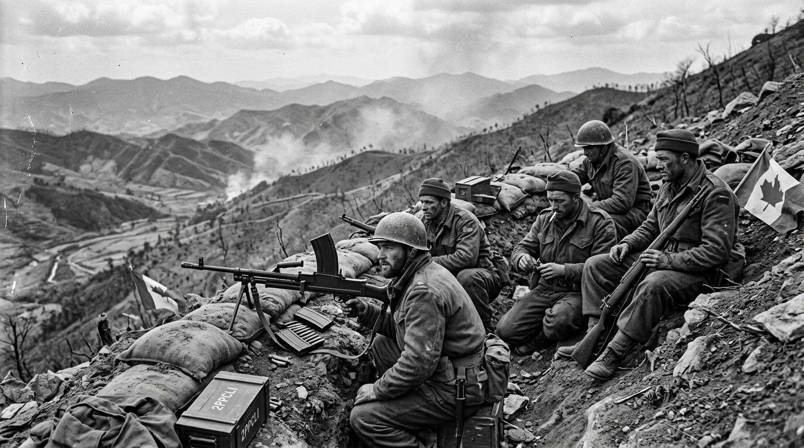
During the Cold War, small conflicts threatened to trigger nuclear war between the superpowers. Canadian diplomat Lester B. Pearson proposed a new concept in 1956: send neutral soldiers in blue helmets between opposing armies to enforce ceasefires without shooting. Peacekeeping defined Canadian identity, but the 1990s proved that lightly armed troops were powerless when ethnic civil wars turned into genocide.
Four Decades of International Missions 1956 to Present
1. Suez Crisis (1956): Britain, France, and Israel invaded Egypt over the Suez Canal. Soviet threats risked World War III. Canadian diplomat Lester B. Pearson created the first United Nations peacekeeping force (UNEF) to separate combatants, earning the 1957 Nobel Peace Prize.
2. Cyprus (1964 to Present): Canadian peacekeepers patrolled the Green Line buffer zone between Greek and Turkish communities, famously defending Nicosia Airport during the 1974 invasion. 28 Canadians gave their lives.
3. Balkans & Medak Pocket (1993): In Croatia, 2nd Battalion PPCLI engaged in a 15-hour pitched battle against attacking Croatian forces to enforce the ceasefire and protect Serbian civilians, marking the heaviest Canadian combat since Korea.
4. Rwanda Genocide (1994): Extremist militias murdered over 800,000 Tutsis in 100 days. When the UN Security Council ordered withdrawal, Canadian General Roméo Dallaire refused to abandon civilians, sheltering 32,000 human beings.
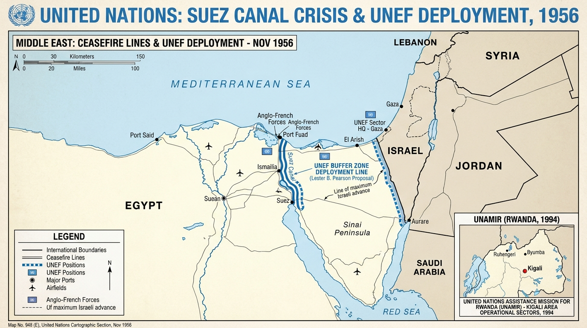
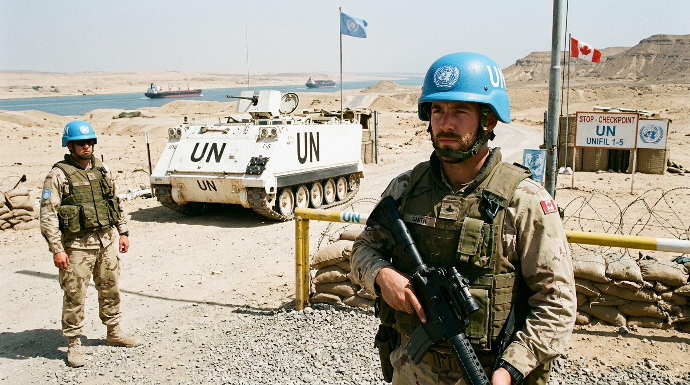
On September 11, 2001, Al-Qaeda terrorists hijacked four airliners and attacked New York and Washington, killing nearly 3,000 civilians, including 24 Canadians. Al-Qaeda was based in Afghanistan under the protection of the Taliban government. For the first time in history, NATO invoked Article 5 collective defense. Canada joined allies to remove the Taliban and spend over a decade fighting insurgents in the dangerous dust of Kandahar.
Modern Warfare & Local Sacrifice Kandahar Province
Total Casualties: ~176,000 direct conflict deaths (including over 70,000 Afghan civilians and ~70,000 Afghan military and police personnel).
Canadian Cost: Over 40,000 served; 158 Canadian soldiers and 7 Canadian civilians killed; more than 2,000 wounded.
Who we fought: Taliban insurgents and roadside bomb (IED) networks.
Private Nathan Smith (Tatamagouche, NS): Killed at Tarnak Farm near Kandahar on April 17, 2002: one of Canada's first combat deaths since Korea.
His mother, Charlotte Smith, served as National Silver Cross Mother.
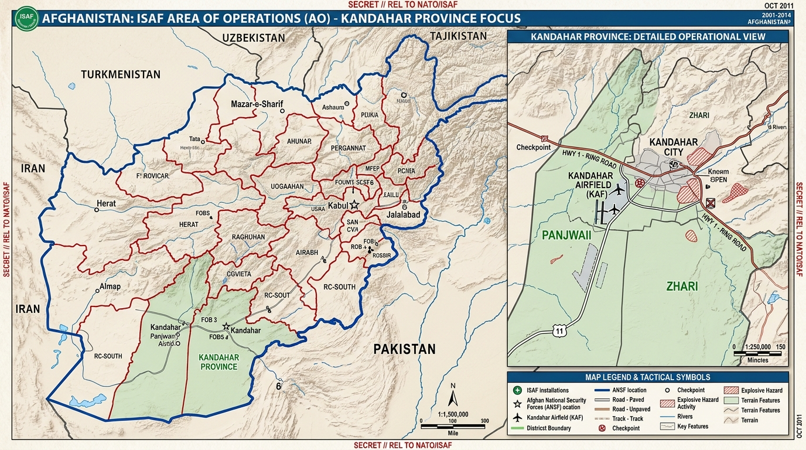
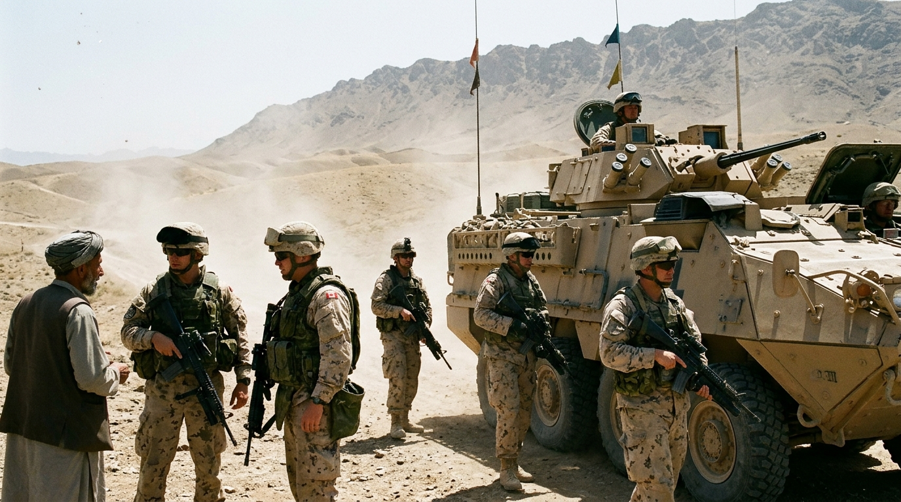
Nova Scotia was never an idle spectator. Halifax was the nerve centre for transatlantic convoys feeding Britain and the site of catastrophic domestic explosions. Meanwhile, Black and Indigenous Canadians fought for the right to serve democracy abroad while denied basic civil rights at home.
Halifax Crises & Service in the Shadows Nova Scotia
Halifax Explosion (Dec 6, 1917): Munitions ship Mont-Blanc exploded in the Narrows; killed 2,000, injured 9,000; deadliest disaster in Canadian history.
VE Day Riots (May 1945) & Magazine Hill (July 1945): 10,000 rioted on victory; 10 weeks later, an ammo depot fire detonated depth charges for 24 hours, evacuating 25,000 people.
No. 2 Construction Battalion: Canada's segregated Black battalion based in Pictou and Halifax; 600 men harvested timber and laid rails in France under fire. Prime Minister apologized in Truro in 2022.
Indigenous Veterans: Over 7,000 volunteered as elite scouts and snipers. Returned home to find they were still denied the federal vote until 1960 and denied equal veterans' benefits.
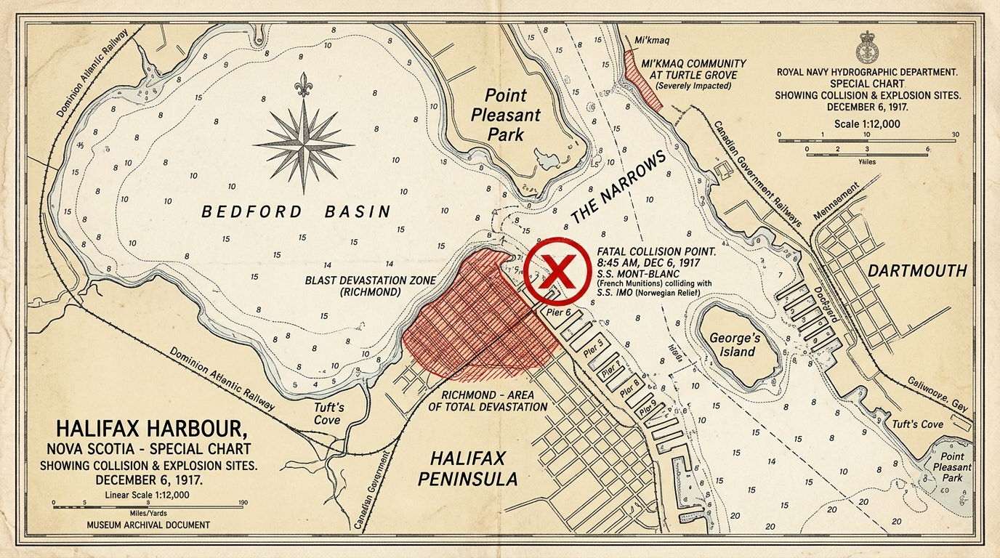
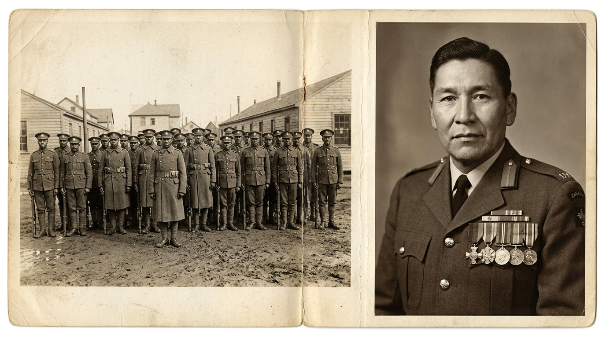
Take 30 seconds to read each scenario. Look directly at your printed Field Guide (text, stats, and maps) to locate the answers. Who can spot the evidence first?
Scenario A: Archie from Truro (1941)
WORLD WAR II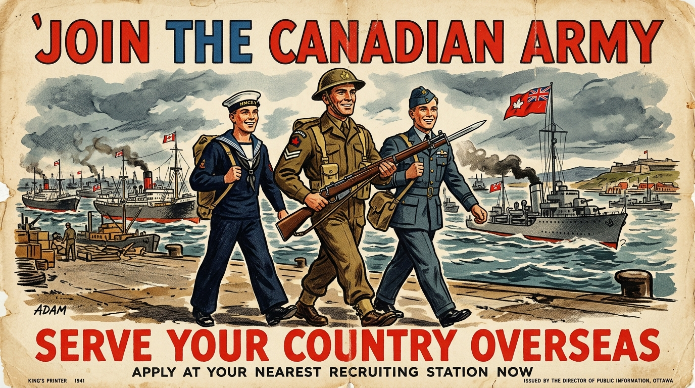
Scenario B: Joseph in the Narrows & Pictou
WWI & HOME FRONT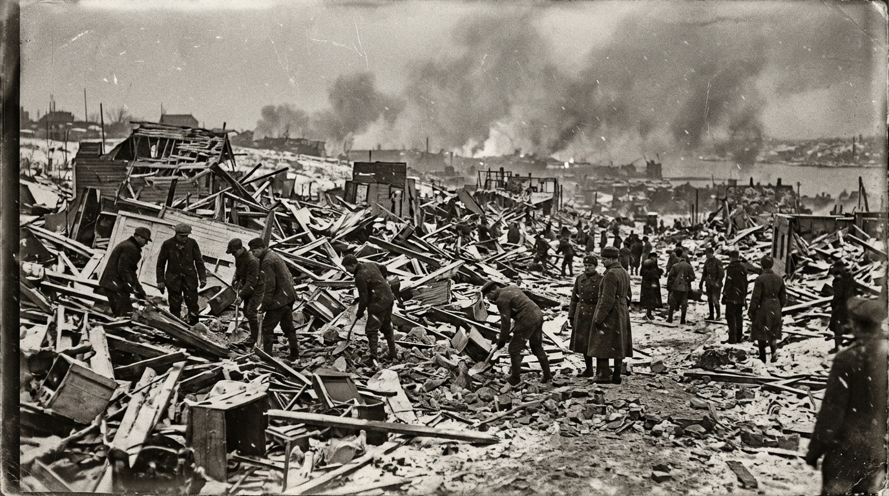
Flip between Page 1 and Page 2 of your Field Guide to track down the locations, political causes, and casualty figures for these three post-1945 missions.
Scenario C: Corporal Campbell at Kapyong (1951)
KOREAN WARScenario D: Blue Helmets & Nathan Smith
PEACEKEEPING & AFGHANISTANNow you understand the conflicts, the maps, and the reasons why Canada fought. When you write your 300 words about an individual soldier or family member, weave in the factual context from your Field Guide so your narrative feels real and grounded.
The Four Mandatory Anchors What Your Report Must Cover
1. The Person & Role: Name, hometown, and exact job (infantry in trenches, merchant convoy seaman, bomber repair, military nurse, peacekeeper, or home front worker).
2. The Conflict & Cause: Which war was it? Cite the dates and why Canada entered (British Empire duty, Parliament vote against Hitler, UN collective security, or NATO alliance).
3. The Location & Danger: Where were they sent? (Check your Field Guide map: Western Front, mid-Atlantic, 38th Parallel, or Kandahar). What was the real physical threat?
4. The Human Impact: Did they survive? How did their service affect their physical health, mind, and family back home?
Next Steps for Tonight Getting Started
If Choosing Option A (Family Story): Talk to a parent, grandparent, or guardian tonight. Ask if anyone in your family tree lived through military service, wartime rationing, or displacement.
If Choosing Option B (Archival Search): Open the Google Doc in Classroom and click the link to canadianletters.ca or veterans.gc.ca. Pick a soldier from Nova Scotia.
Keep your printed Field Guide in your binder: it contains all the dates, causes, maps, and casualty figures you need to cite in your final paragraphs.